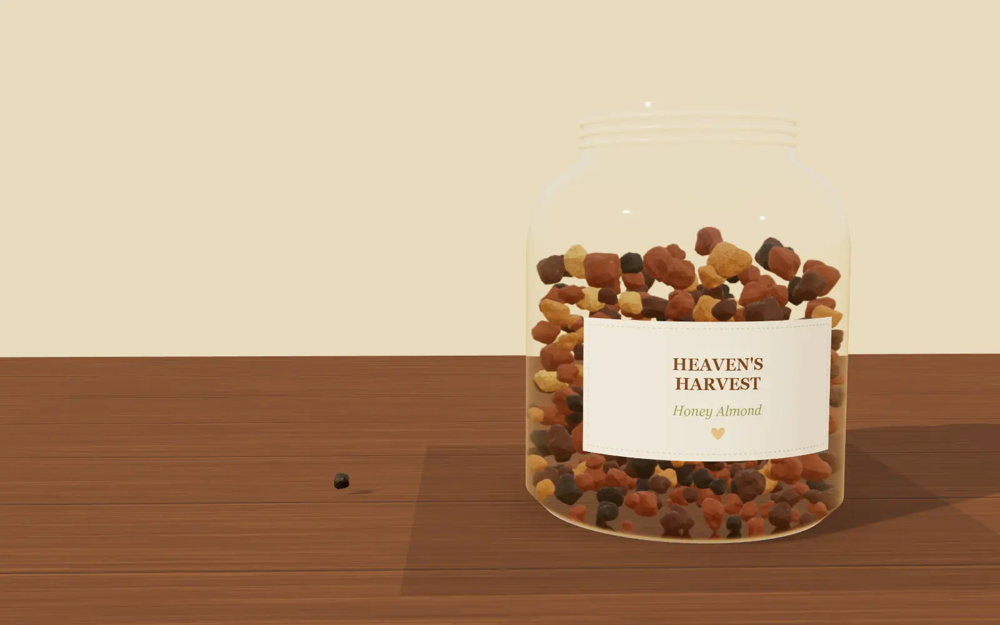

Heaven's Harvest Pantry
Granola
Her story
Blessing bags
Basket · 0
Baked Thursday mornings in Vistancia
Made slow,
in a real kitchen.
Small-batch granola, hand-stirred, jarred by hand, and dropped at your door on Thursday.
See this week's batch
Bring the jar back — $2 off, every time
Watch it again